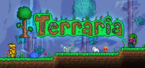

샌드박스류 게임이 다 그렇듯 정해져 있는 건 없다. 자원들을 수집해 집을 짓고, 여러가지 건축을 하고, 물건을 만들고, 탐험하고 몬스터를 사냥하는 것 등등 모두 플레이어의 자유다. 나오는 것들도 판타지와 SF, 현대 물건들이 섞여 있기 때문에 샌드박스라는 점 외에는 특별히 장르를 가리기 어렵다. 몬스터들은 대부분 판타지에서 나올 법한 생김새를 하고 있고, 소설이나 호러 무비 같은 것에 등장하는 괴물들이 많은 편. 플레이타임이 엄청나게 긴 편인데, 소프트코어에 일반 세계로 한 판만 한다고 해도 최종 보스까지 기준 플레이 타임이 80~100시간 정도다.
집을 지을 때는 2D라는 특징 덕분에 상당히 간단하다.그냥 적절히 사각형으로 만들면 끝. 물론 일반적인 사각형 집을 지어도 무방하지만, 아무래도 게임이 게임인 만큼 자기 마음에 드는 독특한 집을 짓는 데 공을 들이게 되기 마련이다. 집의 지형지물이 되는 블록과 2D의 배경이 되는 벽을 바르는 식으로 집을 짓는데, 블록과 벽 타일의 종류도 수백가지인데 여기에 추가로 페인트나 특수 블록으로 수백 가지의 다양한 색감/질감을 낼 수 있으므로 건축에 빠지면 2D임에도 불구하고 마인크래프트 못지않은 매니악한 건축물들을 만들어낼 수 있다. 트레일러에서도 등장한 트리 하우스 같은 개성 있는 집도 지을 수 있다.